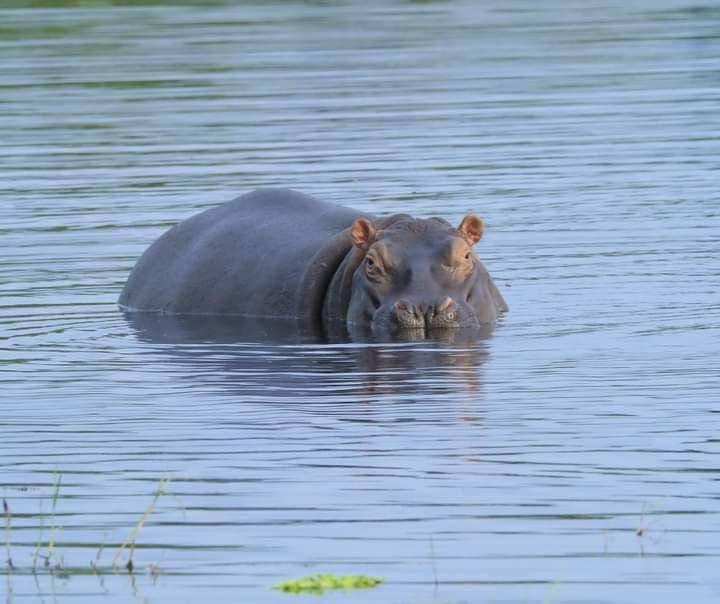

HIPOPÓTAMOS
Os hipopótamos na Guiné-Bissau, especificamente na ilha de Orango, no Arquipélago dos Bijagós, são únicos por viverem em habitat marinho/água salgada, adaptando-se ao ambiente costeiro. Esta população é a mais ocidental da África e utiliza manguezais e águas salobras, sendo uma grande atração turística do Parque Nacional de Orango.

Características e Habitat
Adaptação Exclusiva: Embora aparentados com o hipopótamo-comum de água doce, os hipopótamos de Orango adaptaram-se a viver em água salgada e a movimentar-se entre ilhas. Localização: A maior concentração encontra-se na Ilha de Orango Grande, sendo uma população vulnerável à caça furtiva e perda de habitat. Comportamento: São animais territoriais que se refugiam em lagoas de água doce durante a seca e utilizam os manguezais.
Nome Local: No crioulo da Guiné-Bissau, o hipopótamo é conhecido como pis-cabalo. crucial que essa atividade seja realizada de forma responsável para não perturbar os animais nem seu ambiente. Os visitantes podem desfrutar de safáris guiados e se hospedar em eco-lodges que promovem práticas sustentáveis e respeitosas com o meio ambiente.
Impacto na Comunidade Local
O ecoturismo também tem um impacto significativo nas comunidades locais. Ele fornece emprego e oportunidades de desenvolvimento, ao mesmo tempo que promove a conservação da natureza e da cultura local. Os moradores de Orango participam ativamente da proteção de seu ambiente e da promoção do turismo sustentável.
Tradições e Cultura Bijagó
A Ilha de Orango também é um importante centro da cultura Bijagó, um grupo étnico com raízes e tradições profundas. Os visitantes têm a oportunidade de aprender sobre seus costumes, sua relação com a natureza e sua abordagem única para a conservação ambiental.
Desafios e Futuro dos Hipopótamos Marinhos Desafios Atuais Apesar dos esforços de conservação, os hipopótamos marinhos de Orango enfrentam desafios significativos. A pressão humana, as mudanças climáticas e a degradação do habitat continuam a ameaçar sua sobrevivência. Ação contínua e coordenada é essencial para garantir seu futuro.
Estratégias de Conservação

As estratégias de conservação incluem a proteção de habitats, o combate à caça furtiva, a educação ambiental e a promoção do turismo sustentável. A colaboração entre as autoridades locais, as organizações internacionais e as comunidades é fundamental para o sucesso desses esforços.
Perspectivas Futuras
O futuro dos hipopótamos marinhos na Ilha de Orango depende em grande parte do sucesso das iniciativas de conservação e do compromisso contínuo da comunidade internacional. Preservar essa subespécie única é importante não apenas para a biodiversidade da Guiné-Bissau, mas também para o equilíbrio ecológico global.
Os hipopótamos marinhos da Ilha de Orango são um tesouro natural da Guiné-Bissau e um exemplo fascinante de adaptação e sobrevivência. Sua proteção é um desafio que requer a colaboração e o compromisso de todos os níveis da sociedade. Ao visitar Orango e participar de um ecoturismo responsável, você não apenas contribui para a economia local, mas também para a conservação desses seres extraordinários e seu habitat. A Ilha de Orango e seus hipopótamos marinhos são um lembrete da beleza e fragilidade de nosso mundo natural.